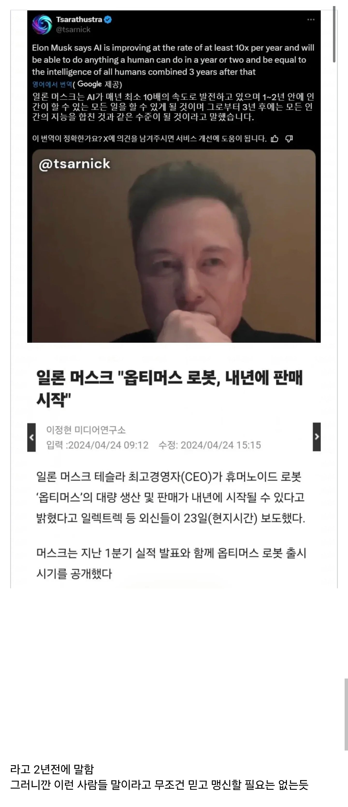

일론 머스크 “2년안에 AI/로봇이 인간의 모든 일 대체“
댓글
4개월 남았으니 혹시모르지ㅋㅋㅋㅋㅋㅋㅋㅋㅋㅋㅋㅋ
아 만 2년이라곤 안했다고 ㅋㅋㅋㅋ
2년 11개월도 2년이다
2년안에 기대감 뿜뿜해서 AI 기업 상장하나 할꺼야 라는 소리지.
일론은 그냥 사업가지 미래학자가 아님.
근데 성공한게워낙많으니...
성공한 사업가임
뒤에 0 하나 붙이면 그럴싸해짐
원래 시업가 말은 적당히 믿어야해
머스크말에 +10년은 더 붙여라
로봇은 몰라도 ai는 확실히 인간과 구분이 어려운 지점에 근접하긴 한거같음
12년 본다
반은 맞는 말 아닌가 지금 사무직이 하는 일은 ai가 전부 가능한거 같은데
그걸 틀렸다고 말한다. 아니 애초에 지금 사무직이 하는 일은 ai가 전부 가능하다하는 것도 니 지식이 그정도밖에 안되서 그러는거다
관점의 차이지
ai 스스로 해결할 수 있냐하면 당연히 아니지만 사람의 지시하에 일을 처리(서포트)할 수 있냐하면 뭐든 가능하다 생각하거든
agi영역에 도달해서 ai 스스로 아웃풋을 낸다는건 먼 미래의 일이지만 사람의 지시하에 ai가 못하는 사무직? 난 없다고 본다
현실제도가 못따라오는 병목상태라
결과적으로는 불가능 맞음
문제는 ai가 결과물에 책임을안져서 검수하는사람은있어야함
다른 말좀 해봐. 이정도면 봇 아님?
사람 몸에 직접 닿는 건 거의 마지막에나 없어질 듯. 난 아직까지 로봇이 사람 머리 깎아 주는 게 상상이 안 간다
2년전에 저 이야기 하지 않았냐
왜 AV 로봇으로 읽었지 ㄷㄷ
20년본다
목표를 2년으로 잡고 했겠지 근데 잘안된거고 근데 그계획은 서서히 걸어서 현실 되고있긴함.
2년은 오바지만 5~10년안엔 가시적인 성과가 나올 수 밖에없음 ㄹㅇ;
머스크타임 ㅅㅂ
라는 주제의 영화나 만화정도 나올 수 있겠다
저새끼 돈도 4년안에 휴지될거라고했는데 한 2년 남은듯 ㅋㅋ
2년은 아니고 5~10년
섹스는 대신하는듯
끙아를 대신 해주다니 고맙다
사장님 제가 로봇보다 쌉니다
얘는 원래 옛날부터 존나 지나치게 미래지향적이라 테슬라 초기에 거하게 말아먹고 좆될뻔 하기도 했음
결과적으론 그때가 머스크 본인한테 전화위복이 되긴 했지만
지랄하네 지금부터 20년이면 몰라도
최소 10년은 지나야 보겠군
빨리 건설 노가다 로봇 대체 좀..
그게되면 우리나라 대공황 올지도 제조랑 부동산 건설업이 경기지표에 존나 크게 차지하는 국가인데 사람들 싹다 잘릴텐데
오히려 부동산 건설업 호황아님? 부동산 건설업 인건비 대폭감소. 수익증가. 건설속도 증가, 아파트 분양가 안정. 걍 노가다 일자리 줄어드는거 말곤 좋을거 같은데
제조, 부동산 건설업 사장님들에겐 호황이지만
근로자가 다 모가지 쳐지면 그사람들은 소비 어케함? 세금은 누가냄?
그래 뭐 세금은 기업에게 더 과세해서 다 뜯어낸다 치더라도 근로자들은 다 뒤지는거임
그럼 그 소비층 바라보고 장사하던 사람들도 망하겠지? 그럼 세금은 또 누가냄? ㅋ
이런식으로 망하면 남는건 중견~대기업뿐일듯? 나머진 싹다 망해버릴지도
서민층은 일안해도 나라에서 돈 주는 사회가 되려나? 대신 존나 쥐꼬리처럼 주고? ㅋㅋㅋ
그리고 아파트 분양가 안정은 안올거임 그거는 더 짓길 바라지 않으시는분들 마음 때문인거라
건설업이 잘되고 말고는 아무런 관련이 없음 공급량을 결정 짓는건 기득권층임 그분들이 풀어줘야 안정이 되는거임
사업가는 투자 받아야해서 뻥카 존나 치는게 패시브임
그래서 걸러 들어야 하는건데 약간 종교 수준의 믿음을 가진 사람들이 있음
인간보다 싸지는 순간부터 지배하는거지
올해는 아니더라도 근 몇년 내에 올거같긴 함
알트만: "AGI 곧 온다" (실제 의미: 지금 출시할 모델 성능은 기대이하다)